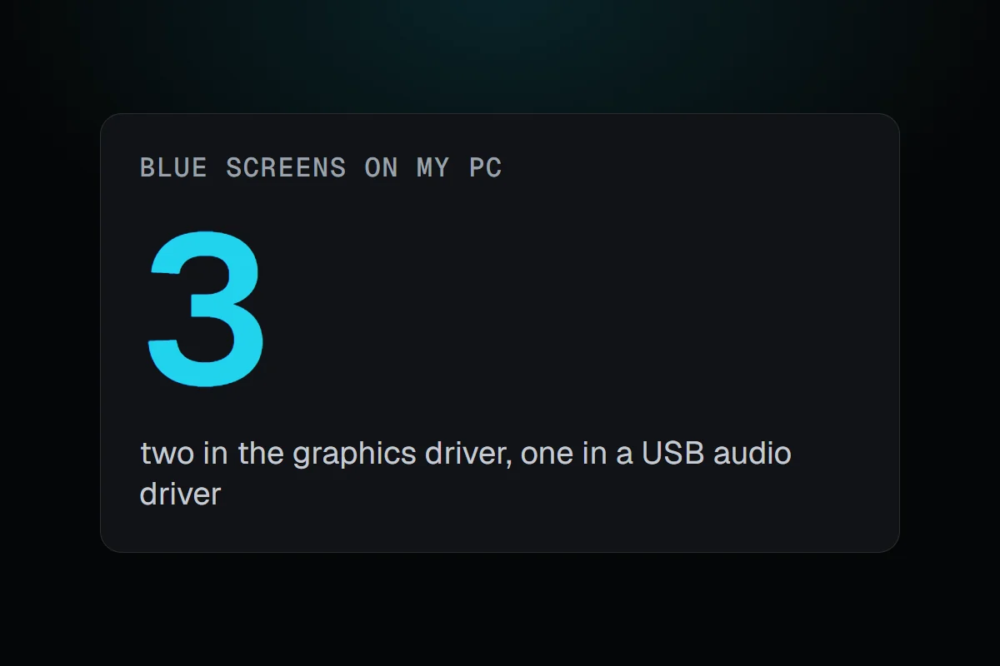
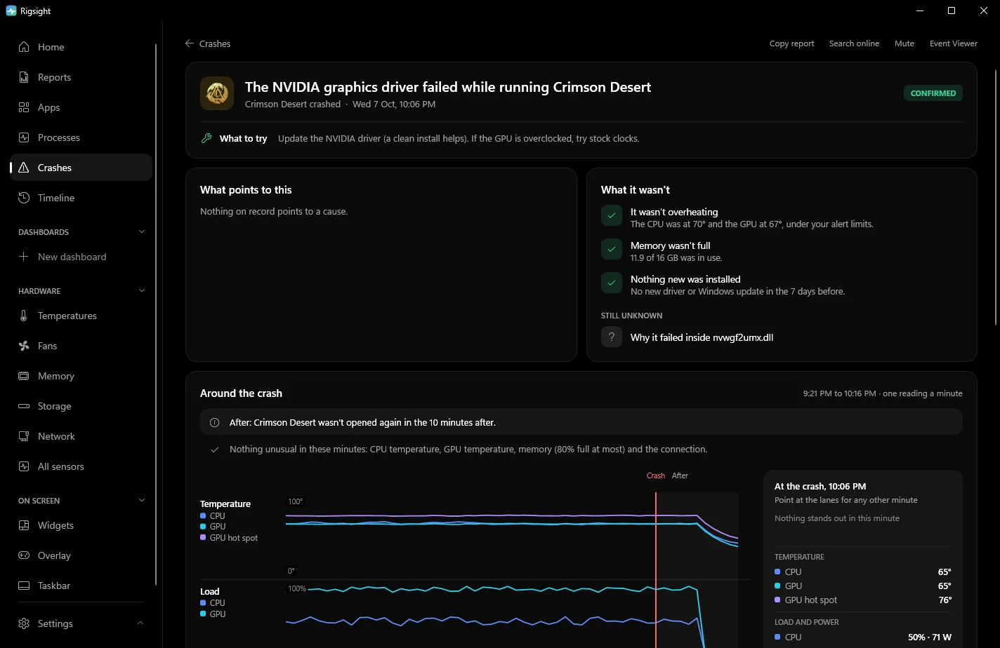

PC problems · Crashes
Blue screen of death causes on Windows 11, and the three on my PC
My PC had three blue screens in four weeks, each with a different stop code. Two were the graphics driver and one a USB audio driver. The common blue screen of death causes on Windows 11, how to find the stop code and the driver Windows names, and the fixes.

The short answer
A blue screen means Windows found a fault it couldn't safely recover from and stopped. Microsoft puts about three quarters down to drivers. Hardware, such as unstable memory or CPU tuning, a failing drive or heat, makes up a smaller share. Find the stop code in Reliability Monitor or Event Viewer, look up what it names, and undo whatever changed last.
Between 11 August and 9 September my PC hit three blue screens, and each one had a different stop code. The usual advice says that different codes every time point at hardware. The real answer was in the drivers Windows named. Two of the three were the graphics driver, and the third was a USB audio driver. The blue screen of death causes on Windows 11 are fewer than they seem, and Windows writes down which one it was if you know where to look.
How RigSight caught it
RigSight reads Windows' own crash records, and when it is first installed it reads them from up to 90 days back. So all three blue screens are on my Crashes page, each with its stop code named and explained.
- On 22 August it was
0x116VIDEO_TDR_FAILURE. At the next start Windows namednvlddmkm.sysas the driver involved. RigSight says "Windows crashed inside nvlddmkm.sys, the NVIDIA driver" and marks it Confirmed, because Windows' own record says so. It was the worst moment of the graphics driver hangs I wrote about in display driver stopped responding and has recovered. - On 9 September it was
0x3BSYSTEM_SERVICE_EXCEPTION, and Windows namedRtUsbA64.sys. RigSight doesn't keep its own name for that file, so it reads the description the file carries and says Windows crashed inside the Realtek USB audio driver. That one is Confirmed too, and it adds "It wasn't the graphics driver", so the NVIDIA driver doesn't get the blame for all three. - On 11 August it was
0x119VIDEO_SCHEDULER_INTERNAL_ERROR, and Windows named no driver at the next start. RigSight says the graphics scheduler hit an error, which is usually the graphics driver, and marks it only Possibly. Under what's still unknown it says which driver or part was at fault, because Windows didn't name one. The error report Windows filed later does namenvlddmkmin its fault bucket line, which I found in Event Viewer.
So two of my three codes were the same driver, and the codes themselves are from the same family. 0x116 and 0x119 are both graphics stop codes. There hasn't been a blue screen since 9 September, as of 5 November in Windows' own log.

Each opened crash also checks the things you would otherwise check by hand. It looks for a driver or Windows update installed in the 7 days before. It names that update, or rules it out when the same blue screen had already happened before it. It also shows any hardware errors handed over at the next start, says whether the CPU or GPU was over your alert limit, and counts how many times the same blue screen has happened before. A 0x124 or 0x101 with no driver named reads Likely a hardware fault. Open a crash for the 45 minutes before it, minute by minute, and use Copy report to paste the whole thing into a forum post. CPU temperature and power need RigSight running with admin rights. RigSight is free and open source.
Why blue screens happen
Microsoft calls a blue screen a stop error or bug check. Drivers and the core of Windows run with full access to the system. When one of them does something that could corrupt memory or your files if it carried on, Windows stops everything on purpose. It saves a dump file and shows a stop code that names the kind of fault. On current Windows 11 that screen can be a plain black one with the same "Your device ran into a problem" message, and it only stays up for about two seconds.
Microsoft estimates that about three quarters of stop errors are caused by faulty drivers. In its own breakdown, hardware problems are about one in ten, and a share can't be traced at all because the memory was too damaged to read. That's why the driver Windows names matters more than whether the codes match.
How to find the stop code and the driver yourself
The stop code is on the blue screen itself, such as Stop code: VIDEO_TDR_FAILURE, and sometimes a line saying What failed: nvlddmkm.sys. That second line is the driver Windows blames. If the PC restarts too fast to read it, turn off the automatic restart.
- Open Settings > System > About and click Advanced system settings.
- Under Startup and Recovery, click Settings.
- Clear Automatically restart under System failure, and check that Write debugging information isn't set to (none).
For crashes that already happened, you don't need any extra tool. Windows keeps the details in a few places.
- In Reliability Monitor, type reliability into Start and open View reliability history. A blue screen shows as "Shut down unexpectedly" with the problem name BlueScreen. The
BCCodeline is the stop code in hex. - In Event Viewer, open Windows Logs > System and look for event 1001 from the source BugCheck. It reads "The computer has rebooted from a bugcheck" with the code, its four parameters and where the dump was saved. Kernel-Power 41 has the same code in decimal, and the Kernel-Power 41 post shows how to convert it.
- Right beside it in the same log, some crashes also get event 1019 with "Possibly related driver" and a file name. That's where my
nvlddmkm.sysandRtUsbA64.syscame from. - In Windows Logs > Application, the Windows Error Reporting event for a BlueScreen has a "Fault bucket" line. Once Windows has looked at the dump, that line can carry the driver's name, as it did for my 11 August crash.
To find the driver behind an old crash without WhoCrashed or other third-party tools, use Microsoft's own debugger.
- Install WinDbg. Microsoft offers it from its WinDbg download page and the Microsoft Store.
- Open it as administrator, choose File > Start debugging > Open dump file, and pick the newest file in
C:\Windows\Minidump. - Type
!analyze -vand press Enter. Give it a minute to download symbols. - Look for
MODULE_NAME,IMAGE_NAMEand the line "Probably caused by". A file ending in .sys is the driver. If it namesntoskrnl.exe, that's Windows itself, and the real cause is usually a driver or hardware further back.
Common stop codes and what they point to
0x124WHEA_UNCORRECTABLE_ERROR means the hardware reported an error it couldn't recover from. It's usually CPU or memory tuning, so undo overclocks, undervolts, Curve Optimizer and XMP or EXPO, and update the BIOS.0x101CLOCK_WATCHDOG_TIMEOUT means a CPU core stopped responding. It's usually unstable CPU tuning.0x1AMEMORY_MANAGEMENT,0x50PAGE_FAULT_IN_NONPAGED_AREA,0x4EPFN_LIST_CORRUPT point to memory. Test with XMP or EXPO turned off and run Windows Memory Diagnostic.0x116VIDEO_TDR_FAILURE and0x119VIDEO_SCHEDULER_INTERNAL_ERROR point to the graphics driver. Clean-reinstall it and undo any GPU overclock.0xD1DRIVER_IRQL_NOT_LESS_OR_EQUAL and0xAIRQL_NOT_LESS_OR_EQUAL mean a driver touched memory it shouldn't. Network, audio and graphics drivers are frequent culprits.0x133DPC_WATCHDOG_VIOLATION means a driver took too long. Often storage, chipset or network drivers, or SSD firmware.0x7AKERNEL_DATA_INPAGE_ERROR and0x154UNEXPECTED_STORE_EXCEPTION mean Windows couldn't read from the drive. Check the drive's health and its cable.0x9FDRIVER_POWER_STATE_FAILURE means a driver failed during sleep or wake. Update chipset and graphics drivers.0x3BSYSTEM_SERVICE_EXCEPTION,0x7ESYSTEM_THREAD_EXCEPTION_NOT_HANDLED and0x139KERNEL_SECURITY_CHECK_FAILURE mean a driver crashed. Anti-cheat and recently installed software are common causes, and so is a driver for something you plug in, like my USB audio one.0xEFCRITICAL_PROCESS_DIED means a core Windows process stopped. Runsfc /scannowand check the drive.
Microsoft's Bug Check Code Reference lists every code with its parameters, if yours isn't here.
Fixes, safest first
- Undo what changed last. For a new driver, open Device Manager, double-click the device, then Driver > Roll Back Driver. Take out new hardware and test without it. Uninstall new software, especially anything with its own driver.
- Install updates from Settings > Windows Update, then get the newest drivers for the device the stop code, event 1019 or WinDbg named, from its maker.
- Put all tuning back to default. Load BIOS defaults, turn off XMP or EXPO for a test, and reset GPU tools.
- Run Windows Memory Diagnostic from Start. Several memory codes in a row deserve a longer test with MemTest86.
- Repair Windows files by running
sfc /scannowin Terminal (Admin). If it can't fix everything, runDISM /Online /Cleanup-Image /RestoreHealthfollowed bysfc /scannowagain. - Check the drive's health with its maker's tool, and keep 10 to 15% of it free, as Microsoft suggests.
- Check temperatures under load against your CPU and GPU maker's limit for your model.
- If Windows won't stay up long enough, start in Safe Mode. Go to Settings > System > Recovery > Advanced startup > Restart now, then Troubleshoot > Advanced options > Startup Settings > Restart and press 4. From there you can roll back drivers or use System Restore.
Updating the BIOS can fix 0x124 and 0x101 crashes on some boards, but a failed BIOS update can leave the PC unable to start. Only do it with your motherboard maker's instructions, on a stable PC, and never during a storm or on a laptop without its charger.
Your next step is to find the BCCode of your last blue screen in Reliability Monitor, then look for event 1019 beside it in the System log. If your last few crashes share a code or a named driver, fix that one thing first. If the codes differ and no driver repeats, start with memory and tuning.
Questions people ask
Why do I keep getting blue screens?
Repeated blue screens with the same stop code, or with the same driver named, point to that driver, so update it or roll it back. Different codes with no driver in common point toward hardware, such as unstable memory or CPU tuning, a failing drive or heat. Compare the codes and the named drivers of your last few crashes before changing anything.
How does the blue screen of death happen?
Windows stops on purpose when something running with full system access, usually a driver, does something that could damage your files or the system if it carried on. It saves a dump file, shows the stop code and restarts.
Can overheating cause a blue screen?
It can, but more often an overheating PC slows itself down or switches off with no blue screen. A blue screen during heavy load with high temperatures is worth checking with the fans, dust filters and the CPU or GPU maker's temperature limit for your model.
Can a blue screen damage my PC?
The blue screen itself doesn't damage anything. It's Windows stopping to avoid damage. Unsaved work is lost, and frequent crashes can corrupt files, which is why running sfc /scannow after a run of blue screens is a good idea.